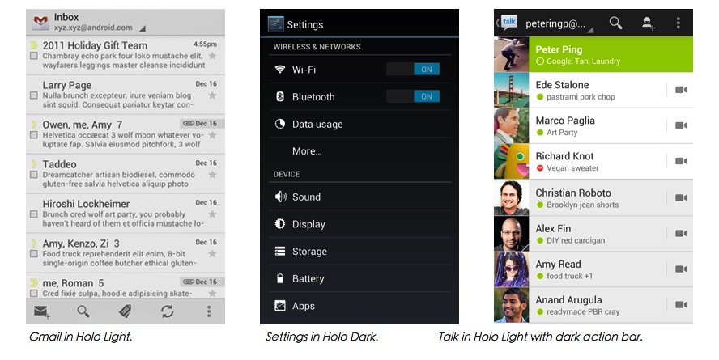

CSDN：xyz_lmn
微博：@张兴业TBOW
2011年底发布的Android 4.0 ，也就是通常所说的 ICS，同时也发布了指导性的应用设计规范《Android Design》 HOLO是在Android 4.0才定下来的。虽然在3.0版本就已经有了一部分HOLO的身影，但是android 3.X的设备占有率也不高，HOLO在3.0算是尝试。
Holo Theme的表现形式
Material design is a comprehensive guide for visual, motion, and interaction design across platforms and devices.
We challenged ourselves to create a visual language for our users that synthesizes the classic principles of good design with the innovation and possibility of technology and science. This is material design.
我们挑战自我，希望创造出一个视觉语言，一个能够结合所有优秀的设计原则并融入科学与技术的语言,这就是材料设计。
Material Design是苹果的拟物设计、微软的扁平设计的延续。
设计的探索之路，相信总有一个点是完美的
完全抛弃了阴影和材质表现等视觉上的细节
Material Design：向拟物回跳一下的扁平化设计
参考资料
联系我： 张兴业TBOW